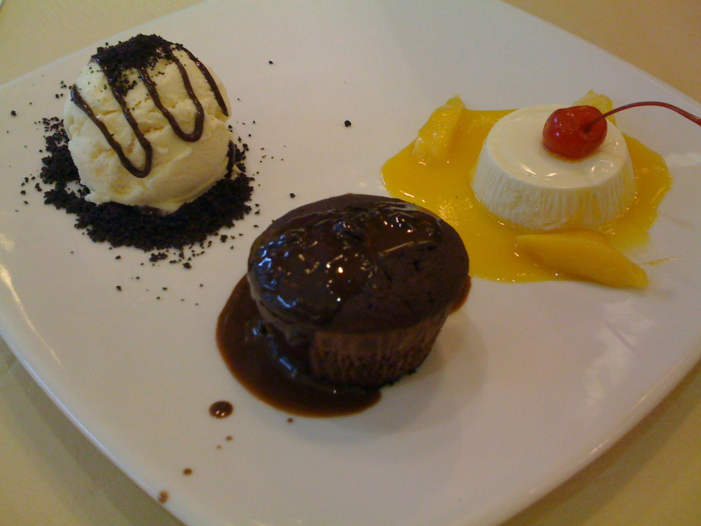
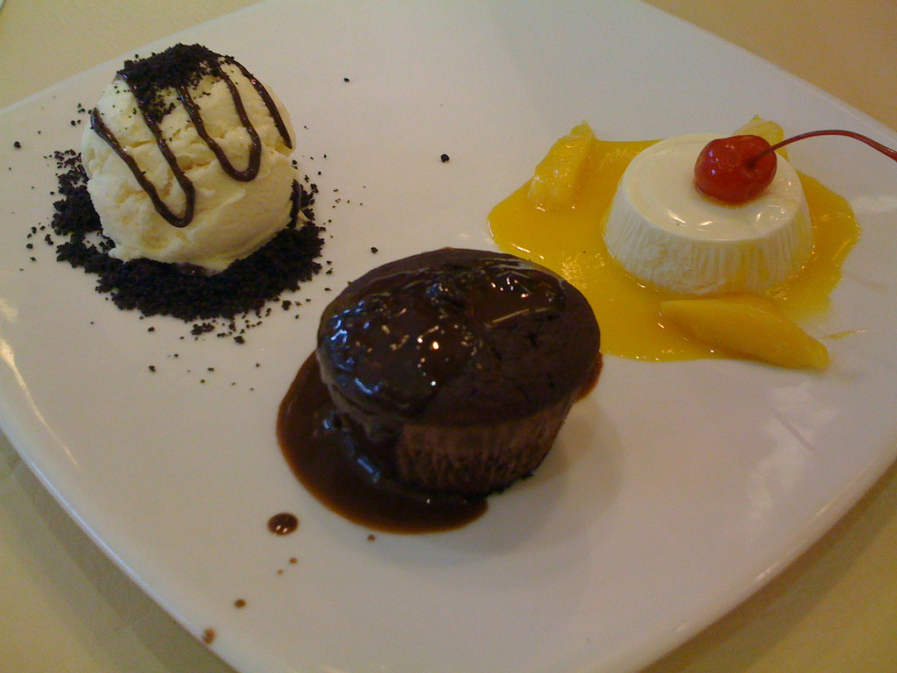

Bring 3 cups and a few extra tablespoons of water to a boil. Cook quinoa over medium heat for 15-18 minutes or until water is absorbed and the seed has germinated. Set aside to cool.
Preheat the oven to 400.’ Rigorously wash the beets and radishes, as you will not be peeling them before roasting. Remove grimy tops and cut beets and radishes into fourths, then sixths or 8ths. You want large-ish, yet bit sized wedges. Cut fennel bulb in a similar fashion, top to bottom. Toss wedges of radish, beets, and fennel together with olive oil and salt in a parchment lined sheet pan. Roast in the oven for 20-30 minutes, turning veggies over to brown and soften on all sides.
In a large mixing bowl, combine chopped parsley, chives, diced red onion with cooled quinoa. In a small jar prepare the dressing by combining ½ cup olive oil, juice of 3 whole lemons, salt, pepper, and minced garlic cloves. Shake to combine.